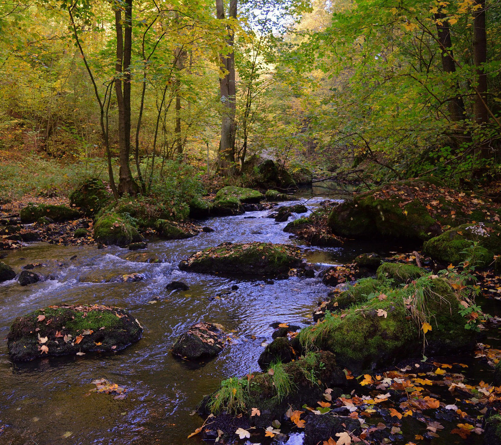
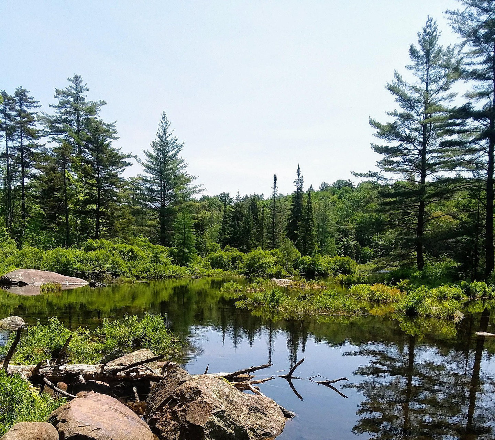
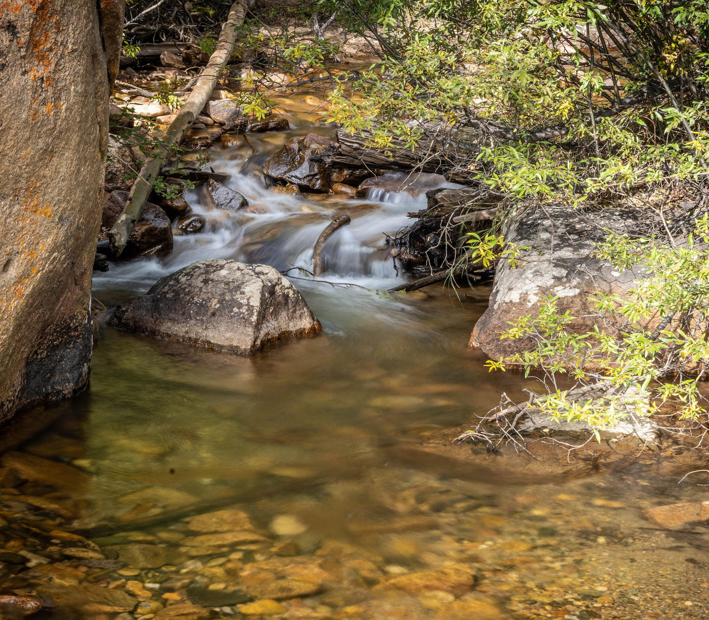

Water quality is commonly related to a combination of biological, physical, and chemical characteristics. Broadly, these characteristics are then used to assess the water quality based on the intended use. We often think about water quality as it relates to human health, but researchers also monitor water quality to study ecosystem health. Which characteristics are measured, and the standards they assessed against, will differ depending on the intended purpose of a water resource. For example, drinking water and water for swimming or boating will have different standards for assessment.

An obvious reason to care about water quality is to protect human health, particularly for drinking water. We also want to know that the water we use for recreation is safe and that aquatic systems are healthy. Water is an essential resource for so many things, so it is natural that we regularly monitor water quality for a wide variety of purposes.

There are many properties of water that are measured and a variety of ways to make measurements. Commonly measured properties include temperature, pH, nutrients, amounts of sediments and changes in water color or clarity, oxygen concentrations, contaminants, or biological activity. Rates of water flow are important for understanding many properties of water quality, and so the two are commonly measured together. We measure water quality in many ways including collecting samples directly from waterbodies, with sensors that automatically collect data, or from space with satellites.

Most of my water quality research has focused on biological characteristics of rivers and lakes. I study how those biological characteristics respond to other aspects of water quality, site conditions, or weather. For example, which conditions are more favorable for algal growth or harmful algal blooms.